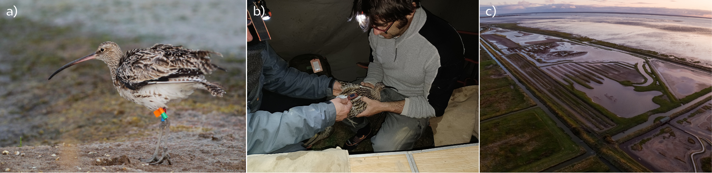
Utilisation de l’espace par le Courlis cendré aux alentours de la réserve de Moëze-Oléron
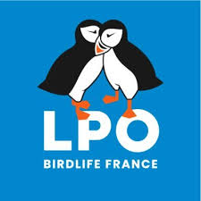
Introduction

Crédit photo : JoachimKohlerBremen (Wikimedia Commons)
Contexte de l’étude
Depuis 2015, la Ligue pour la Protection des Oiseaux (LPO-France), en collaboration avec les laboratoires LIttoral ENvironnement et Sociétés (LIENSs, UMR 7266, CNRS - Université de La Rochelle) et le Centre d’Écologie et des Sciences de la Conservation (CESCO, UMR 7204, CNRS - MNHN - Sorbonne Université), bague et équipe de GPS des Courlis cendré au sein de la Réserve Naturelle Nationale de Moëze-Oléron (Figure 1).
L’objectif général de cette étude est de mieux comprendre l’utilisation de l’espace par ces oiseaux dans un site fonctionnel comprenant le bassin de Marennes et le marais de Brouage (Figure 2). Cette recherche s’inscrit dans un contexte de recul du trait de côte, entraînant une maritimisation progressive de la réserve naturelle, et de fortes pressions anthropiques (chasse, pêche à pied, ostréiculture). Il s’agit d’identifier et de proposer des zones prioritaires à préserver pour l’accueil des limicoles.
À partir de l’analyse des données issues de balises GPS posées sur plusieurs dizaines de courlis cendrés dans la réserve, l’objectif principal est de produire un atlas dynamique décrivant l’usage de l’espace par ces oiseaux, en lien avec les activités humaines et les effets de la maritimisation.
Le travail présenté ici propose une cartographie fine de la répartition des courlis dans le site fonctionnel de la réserve de Moëze-Oléron en fonction des fluctuations environnementales et des perturbations anthropiques dédectées et mesurables sur la zone.
Cette étude s’inscrit dans le cadre du projet « Adaptation des limicoles aux changements climatiques ».
L’espèce d’étude : le courlis cendré (Numenius arquata)
Morphologie
Le Courlis cendré est le plus grand limicole d’Europe. Longueur : 55–65 cm. Envergure : 90–110 cm. Poids : 600–1200 g. Plumage brun-gris tacheté, bec long (jusqu’à 15 cm), courbé vers le bas. Dimorphisme sexuel marqué ; la femelle est généralement plus grande avec un bec plus long.
Comportement général
Espèce discrète, au comportement prudent. Territorial en période de reproduction, grégaire en dehors de celle-ci. Chant flûté, ascendant et mélancolique, souvent émis en vol.
Régime alimentaire
Régime invertivore dominant : vers de terre, insectes, mollusques, crustacés. Complété ponctuellement par des graines et baies. Alimentation au sol ou par sondage dans la vase ou les prairies humides. Habitat
- Habitat de reproduction : prairies humides, landes, tourbières, marais, zones agricoles extensives.
- Habitat d’alimentation : vasières intertidales, estuaires, prés salés, prairies humides, pâtures.
- Habitat de repos (hors reproduction) : vasières, zones littorales, lagunes, marais salants.
Saison de reproduction
Avril à juillet. Nid au sol, souvent dissimulé dans la végétation. Ponte de 3–4 œufs. Incubation ~28 jours. Émancipation des jeunes vers 5–6 semaines.
Migration
Migrateur partiel. Les populations du nord-est de l’Europe hivernent principalement en Europe occidentale et sur les côtes atlantiques africaines. En France, présence à l’année dans certaines régions littorales (ex. : Baie de Somme, estuaire de la Loire), migration marquée en automne et au printemps.
Effectifs de population
Population mondiale : estimée à 140 000 – 240 000 couples reproducteurs (équivalent à environ 280 000 – 480 000 individus matures).
Population européenne : estimée à 97 000 – 167 000 couples (BirdLife International, 2021).
Population française :
- Nicheurs : 2 200 à 2 800 couples (principalement dans le nord-ouest, Centre-Val de Loire, Grand Est).
- Hivernants : 20 000 à 30 000 individus, surtout sur le littoral atlantique et dans le sud-est.
Tendance : déclin modéré à marqué en Europe occidentale. Fort recul des effectifs nicheurs en France depuis les années 1980 (perte estimée à plus de 30 %).
Statuts de conservation
IUCN : Near Threatened (Quasi menacé) à l’échelle mondiale.
Europe : Annexe II de la Convention de Berne. Déclin confirmé dans plusieurs États membres.
France : Liste rouge nationale : Vulnérable. Protégé par l’arrêté du 29 octobre 2009. Espèce non chassable.
International : Annexe II de la Convention de Bonn (CMS). Annexe II.2 de la Directive Oiseaux (espèce chassable sous conditions, mais interdite en France).
Atlas dynamiques
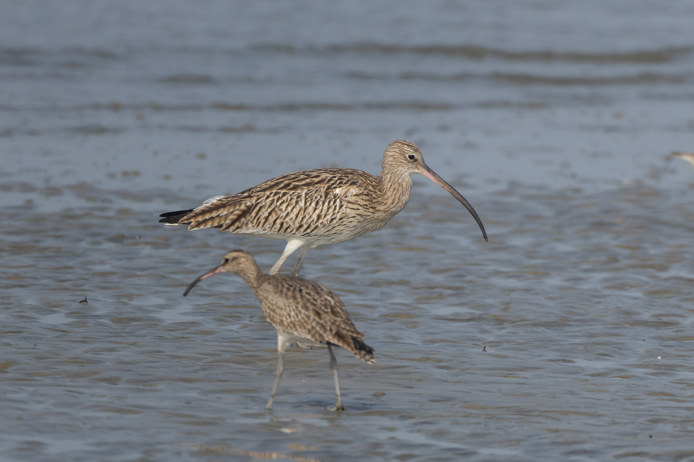
Crédit photo : Tisha Mukherjee (Wikimedia Commons)
Le détails des méthodes est disponible dans le document Readme du projet.
La zone d’étude
La zone d’étude (voir Figure 2) est un rectangle de 623.5 km² qui s’étend :
- au Nord jusqu’à l’estuaire de la Charente,
- à l’Est jusqu’à la limite Est de la ville de Rochefort,
- au Sud jusqu’à l’estuaire de la Seudre,
- et à l’Ouest jusqu’à la facade Est de l’ile d’Oléron, englobant ainsi zone fonctionnellle du bassin de Marennes, la réserve de Moëze-Oléron et le marais de Brouage.
Les études sur la zone globale ont été effectué avec un grain spatial large en grille de 100 m x 100 m. Les études sur les zones réduites A, B, C, D et E ont été effectués avec un grain spatial fin en grille de 10 m x 10 m.
Les données GPS utilisées
Nettoyage des données GPS
Le nettoyage des données issues des balises GPS a principalement été effectué à l’aide du package R adehabitat Calenge (2006).
En résumé, les points utilisé pour déterminé les comportements d’alimentation et de repos sont stationnaire (vitesse inférieure ou égale à 0.5km/h). Pour que chaque individu ait le même poids dans les analyses, un point toutes les 5 min a été estimé pour chaque individus. Uniquement les points situés dans la zone d’étude ont été utilisé. Le temps entre chaque point de localisation sauvegardé par individé pouvant varier et propoquer des périodes de carences de données plus ou moins longues, les périodes où la balise GPS de l’oiseau a enregistré plus d’un point par période de 5 min ont été analyses (éviter d’analyser des positions GPS trop peu précises et de résolutions temporelles hétérogènes). Une limite basses de 100 points estimés par individus sur une période supérieure à de fois 28 jours (deux cycles lunaires) à été appliqué pour maintenir une très haute qualité de suivi des individus pour les analyses.
Taille du jeu de données analysé
Etape de nettoyage
Taille jeu de données
Taille du jeu de données brut :
- Nombre d’individu : 99
- Nombre de point GPS enregistrés : 5 230 178
Taille du jeu de données dans la zone d’étude :
- Nombre d’individu : 83
- Nombre de point GPS enregistrés : 3 138 014
Taille du jeu de données final utilisé :
- Nombre d’individu : 46
- Nombre de point GPS enregistrés : 406 687
- Nombre de femme : 7, nombre de mâle : 7
- Nombre de juvéniles : 7, nombre d’adulte : 18
Après nettoyage et filtration des données :
- la période de suivi court de 2018 à 2024
- 406687 point GPS ont été analysés
- 46 individus ont été étudiés
- adult points GPS correspondent à 161654 individus adultes, juv points GPS correspondent à 29294 des individus juvéniles, et 215739 des individus n’ont pas d’âge identifié
- 59863 individus sont assignées femelles, 43632 sont assignés mâles, et 303192 individus n’ont pas de sexe identifié
Temps passé dans la réserve de Moëze-Oléron
Le temps passé dans la réservé est estimé comme le nombre de point GPS observés dans et hors réserve pour chaque individu. Chaque point représente 5 min de temps.
Pourcentage moyen de temps passé dans la réserve pour :
- les comportements de repos : 0.597 %
- les comportements d’alimentation : 0.631 %
- tous autres comportements : 0.619 %
- tous les comportements réunis : 0.610 %
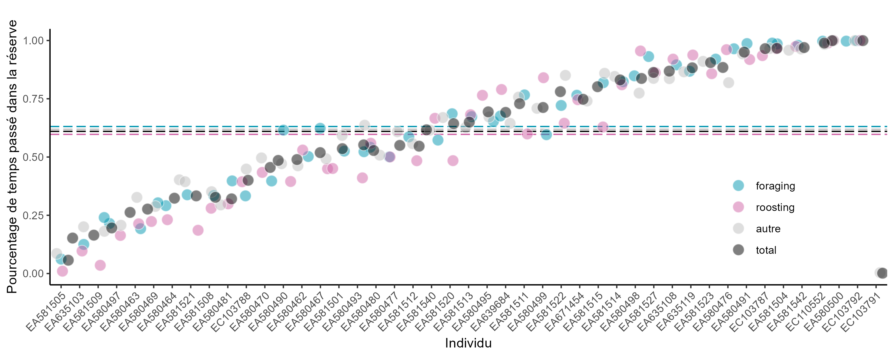
Domaines vitaux au sein de la réserve de Moëze-Oléron
La distribution d’utilisation (Utilization Distribution, ou “UD”) est une fonction mathématique (une densité de probabilité) qui décrit la probabilité de présence d’un individu dans son environnement en fonction des points GPS qui lui ont été associés (Worton, 1995). Elle permet donc d’estimer les zones les plus fréquemment utilisées par un animal.
Les distribution d’utilisation de l’espace ont été estimé par la méthode dite du noyau (kernel), qui consiste à lisser les localisations individuelles afin de produire une carte continue de l’utilisation de l’espace. L’estimation par noyau repose sur un paramètre de lissage (bandwidth, nommé h), ici calculé selon la règle de Silverman, ajustée par un facteur de 1/2 (h/2) pour permettre des analyses à grain plus fin.
Les domaines vitaux (home range) ont ici été estimés (Figure 4) à l’aide des fonctions kernelUD et getverticeshr du package “adehabitatHR” Calenge (2006).
Les calculs ont été réalisés à partir de l’ensemble des points de localisation disponibles pour chaque individu, tous comportements confondus.
Deux niveaux de domaine vital sont définis pour chaque individu : - Le domaine vital étendu (à 95%) correspondant à l’enveloppe englobant 95 % de la surface d’utilisation - Le noyau d’activité (à 50%) représentant les zones de fréquentation la plus intense
Aire (en m²) des domaines vitaux individuels estimés à 95% (ronds oranges) et 50% (triangles verts) et pourcentage situés dans la réserve naturelle de Moëze-Oléron (gradients de couleurs, Figure 5).
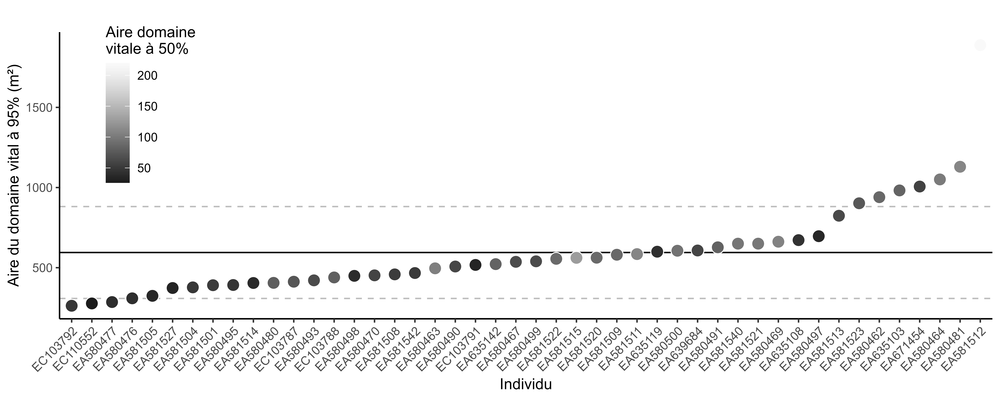
Identification des reposoirs

Crédit photo : Idaho69 (Wikimedia Commons)
Le comportement de repos est défini comme un point GPS d’une vitesse de déplacement inférieure ou égale à 0.5 Km/h et entre 2h avant et 2h après la marée hautes. La vitesse de déplacement pour chaque point GPS a été estimé par partir de la fonction speedfilter du package “adehabitatHR”.
Les reposoirs sont estimé :
- à partir des données de l’ensemble des individus via la délimitation de zone “hotspot” Bakker et al. (2021) et de façon global sur toute la zone d’études (sur des grilles de 100m x 100m, Figure 6)
- de façon plus fine (Figure 7) sur les zones spécifiques A, B, C, D et E (voir Figure 2, sur des grilles de 10m x 10m).
Pour les deux méthodes, les reposoirs sont identifiés à l’aide de la fonction kernelUD du package “adehabitatHR” Calenge (2006).
Reposoir en fonction de l’age
L’âge des individus est déterminé au baguage grâce au plumage des individus. Les individus juvéniles lors du baguage et de la pose du GPS deviennent adultes après le 1er septembre de l’année suivante.
Reposoir en fonction du sexe
Le sexe des individus a été déterminé lors de la pose des GPS.
Identification des zones d’alimentation
Le comportement d’alimentation est défini comme un point GPS d’une vitesse de déplacement inférieure ou égale à 0.5 Km/h et entre 2h avant et 2h après la marée base. La vitesse de déplacement pour chaque point GPS a été estimé par partir de la fonction speedfilter du package “adehabitatHR”.
Les zones d’almimentation sont estimées :
- à partir des données de l’ensemble des individus en identifiant des zones “hotspots” Bakker et al. (2021) et de façon global (Figure 10) sur toute la zone d’études (sur des grilles de 100m x 100m)
- soit de façon plus fine (Figure 11) sur les zones spécifiques A, B, C, D et E (voir Figure 2, sur des grilles de 10m x 10m). Les zones d’alimentation sont identifiées à l’aide de la fonction kernelUD du package “adehabitatHR” Calenge (2006).
Zone d’alimentation en fonction de l’age
Zone d’alimentation en fonction du sexe
Distance entre les reposoirs et les zones d’alimentation
La distance entre la zone d’alimentation et de repos a été estimé comme la distance entre les paires de centroïds géographiques individuels des zones d’alimetation et de repos à chaque cycle de marais (Figure 14).
Il y a une corrélation significative (p-value : 6.93e-16 ***) entre la distance individuelle moyenne alimentation-repos et sa variance : les individus qui font le plus loin en moyenne sont aussi ceux qui varient le plus dans la distance parcours à chaque cycle de marais.
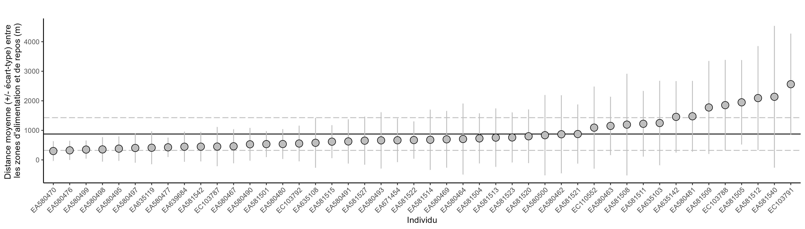
Les distances à chaque cycle de marais des paires de centoïds individuels entre les zones d’alimentation et de repos ont été comparé entre les mâles et les femelles, les adultes et les juvéniles, et pendant ou hors péridoe de chasse (Figure 15).
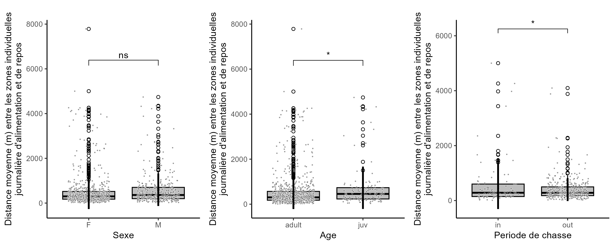
Les juvéniles parcourent significativement plus de distance entre leurs zones d’alimentation et de repos que les adultes. Il n’y a pas de différence significatives entre les mâles et les femelles. La distance entre la zone d’alimentation et de repos d’allonge lors de la période de chasse (et plus de variabilité ?).
Fidélité aux espaces au cours des cycles de marée
Afin d’estimer la fidélité au espace, pour le repos, comme pour l’alimentation, des zones d’utilisation principale de l’espace sont estimée en fonction des années ou des mois, puis le chvauchement de ces zones est estimé deux à deux. Un fort chevauchement équivaut à une forte similarité entre les zones au cours du temps, ce qui équivaut à une forte fidélité aux espaces.
Reposoirs

! Alimentation

Quelles zones de report des oiseaux lors des fluctuations environnementales et des perturbations anthrophiques ?
Fluctuation de l’utilisation de l’espace entre le jour et la nuit
Les périodes de jour et de nuit sont définies sur la base des levers et couchers du soleil issus du logiciel de marée “wxtide32”.
Reposoir en fonction du jour et de la nuit.
Zone d’alimentation en fonction du jour et de la nuit.
Reposoirs entre fonction de la hauteur d’eau
Les reposoirs peuvent varier en fonction de la hauteur d’eau lors des marées hautes (Figure 20).
Le marégraphe utilisé pour obetenir les hauteurs d’eau (en m) est celui de l’ile d’Aix en priorité, puis corrélation avec la cotinière et la rochelle quand il y a des trous. La hauteur d’eau est moyennée pour chaque période du grain temporelle choisi (5 min). La variable choisi pour la hauteur d’eau est la variable “validé temps différé” en priorité, puis “brute temps différé”, puis “brute haute fréquence”. Les données de hauteurs d’eau ont été téléchargée via le site du SHOM.
Le type de de marée hautes en fonction de la hauteur est défini comme :
- marée de mortes eaux : inférieur à 4.8m
- marée de vives eaux : entre 4.8m et 6.4m
- submersion de la lagune : supérieur à 6.4m
Utilisation de l’espace par les Courlis cendré lors d’évènements climatiques extrêmes
Les données météorologiques sont issues du site météostat pour la station météorologique de La Rochelle.
Les évènements climatiques extrêmes (ECE) sont généralement définis comme les évènements d’intensité supérieure (ou inférieur) au quartile 95% des distributions du paramétres météorologiques (REF) sur la période 2015-2024.
Ici, les paramètres météorologiques étudiés sont :
- la vitesse moyenne journalière du vent
- l’orientation moyenne journalière du vent
A partir de ces deux paramètres météorologiques, 3 paramètres météorologiques extrèmes ont été calculés :
- les évènements de vent fort : ECE supérieur à 95%
- les évènements de vent de Nord-Ouest : orientation entre 270 et 360 degrés
- les évènements de vent fort de Nord-Ouest : ECE supérieur à 80% et d’orientation entre 270 et 360 degrés
Vents forts
Vent de Nord-Ouest
Vents forts de Nord-Ouest
Chasse
Chasse à pied
Effet de la période de chasse
L’utilisation de l’espace par les Courlis cendrés pendant et hors période de chasse à pied sont comparés.
Les données disponibles pour la chasse à pied se restreinge à la zone DPM. Les analyses sont donc faites uniquement dans un rayon de 1 km autour de ce point DPM.
Egalement, afin de limiter les effets de variation saisonnière sur l’utilisation de l’espace, le jeu de données est réduite autour de la période de chasse, de juillet à février.
Effet de la présence de chasseur pendant la période de chasse
L’utilisation de l’espace par les Courlis cendrés lors de jour de présence ou d’abscence de chasseur sur le site sont comparés.
Le jeu de données est ici restreint à la période de chasse uniquement.
Effet du nombre de chasseur
L’utilisation de l’espace par les Courlis cendrés en fonction du nombre de chasseur présence sur site sont comparés.
Chasse à la tonnes

Une tonne de chasse au gibier d’eau, Éguille-sur-Seudre, Charente-Maritime, France (crédit photo: Jean-Pierre Bazard).
La chasse à la tonnes, est une méthode de chasse au gibier d’eau pratiquée depuis une installation fixe et dissimulée appelée tonne. Celle-ci est aménagée à proximité d’un plan d’eau artificiel (mare de tonne) dans le but d’attirer et de tirer les oiseaux migrateurs, principalement les anatidés (canards, oies), souvent de nuit.
La tonne est enterrée ou semi-enterrée et équipée pour permettre l’observation, l’attente prolongée et le tir. Des appelants vivants (canards domestiques dressés) ou artificiels (formes flottantes) sont disposés sur le plan d’eau pour simuler la présence d’un groupe et inciter les oiseaux sauvages à se poser.
Ces plans d’eau (appelé mare à la tonne) sont spécifiquement aménagés pour optimiser leur attractivité : contrôle de la végétation, entretien régulier, et gestion du niveau d’eau. Leur usage est réservé aux installations déclarées.
Cette pratique est fortement ancrée dans le patrimoine cynégétique local, notamment sur le littoral et les marais de Charente-Maritime. Toutefois, elle soulève des questions relatives à la pression exercée sur les espèces migratrices, à la conservation des zones humides, et à la cohabitation avec d’autres usagers de la nature.
Réglementation en Charente-Maritime :
- Période de chasse : ouverture généralement fin aout, fermeture fin février.
- Horaires de tir : Le tir de nuit est autorisé dans le cadre de la chasse à la tonne. En période anticipée (à partir du 17 août), le tir est interdit de 9h00 à 19h00 sur les territoires situés hors du domaine public maritime (DPM) et fluvial (DPF).
- Installations des tonnes : La tonne doit être déclarée auprès de la préfecture. Une distance minimale de 300 mètres est imposée entre deux tonnes. Les installations doivent répondre à des normes de sécurité et ne peuvent être déplacées sans autorisation.
- Appelants : L’utilisation d’appelants vivants est autorisée sous réserve de déclaration, baguage et respect des règles de détention (traçabilité, soins, conditions sanitaires). Les formes artificielles sont également admises.
Afin d’étudier l’effet de la chasse à la tonnes (point noir) et des tonnes de chasse sur l’utilisation del’espace des Courlis cendré, deux zones ont été définies (Figure 36) :
- Zone de danger : zone d’un rayon de 300m entourant chaque tonnes de chasse (en orange)
- Zone de proximité : zone d’une rayon de 1.5 km entournat chaque tonnes de chasse (en jaune)
Pour estimer les effets de la période de chasse (hors ou pendant la pépriode de chasse) et de la zone (de danger ou de proximité) sur la répartition spatiale des points GPS enregistrés pour chaque individu, le modèle linéaire mixte suivant a été appliqué via le packages R “lmerTest”:
Nbpoint_{it} = \beta_0 + \beta_1 \text{zone}_i + \beta_2 \text{period}_t + \beta_3 \left(\text{zone}_i \times \text{period}_t\right) + IND_i + \varepsilon_{it}
Avec :
IND_i \sim \mathcal{N}(0, \sigma_b^2), \quad \varepsilon_{it} \sim \mathcal{N}(0, \sigma^2)
Ainsi, le nombre de point GPS enregistrés Nbpoint_{it} pour l’individu i est expliqué par trois effets fixes :
- \beta_1 correspondant l’effet de la zone \text{zone}_i
- \beta_2 correspondant à l’effet de la période \text{period}_t
- \beta_3 correspondant à l’effet intéractif de la \text{zone}_i par la \text{period}_t, c’est-à-dire l’effet de la zone de danger versus de proximité sachant que le point a été enregistré durant versus en dehors de la période de chasse
\beta_0 est l’ordonné à l’origine du modèle.
Puisqu’un même individus comptent plusieurs points GPS enregistré, et que ces points ne sont donc pas indépendants entre eux, un effet aléaoire IND_i a été ajouté. \varepsilon_{it} correspond aux résidus du modèle, autrement dit à la variation dans le nombre de points GPS Nbpoint_{it} qui n’est pas expliqué par ces variables.
Puisque la chasse à la tonnes se pratique de nuit, uniquement les points GPS enregistrés de nuit ont été inclus dans l’analyse.
Aussi, l’aire des zones de danger et de proximité sont nécessairement différentes, avec la zone de proximité bien plus étendues que la zone de danger. Le nombre point GPS enregistrés pour chaque individus dans chaque zone a donc été divisé par surface total de chaque zone afin de prendre en compte la non répartition homogène des points GPS entre les deux zones uniquement due à leur surface respective.
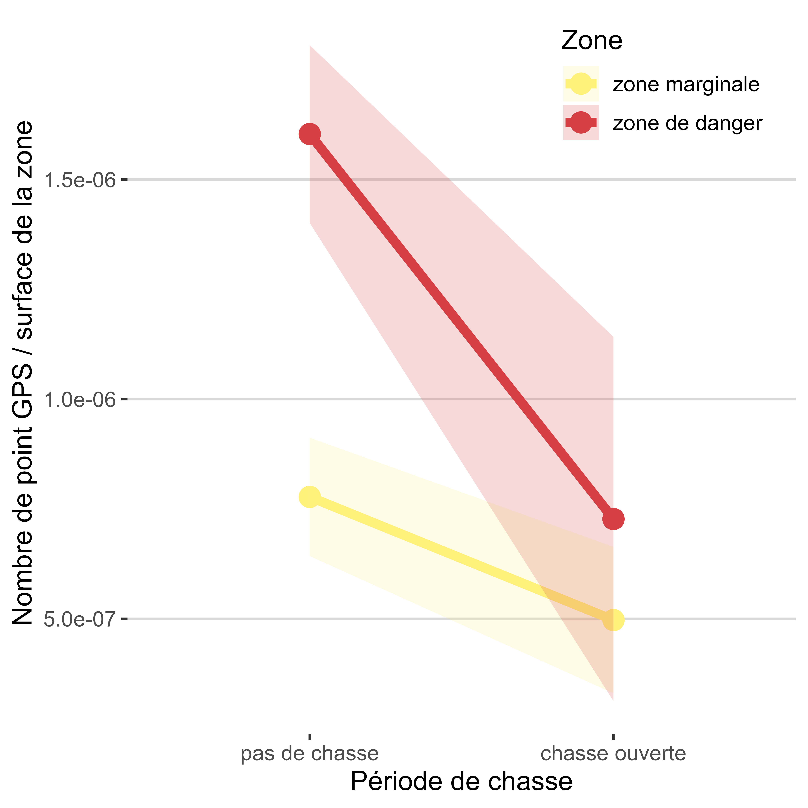
Résultats du modèle :
| Effets fixes | ||||||||
|---|---|---|---|---|---|---|---|---|
| Coefficient | Erreur Std | t | df | p-value | IC 2.5% | IC 97.5% | Signif. | |
| Intercept | 7.77 × 10−7 | 6.87 × 10−8 | 1.13 × 101 | 15.93201 | 4.98 × 10−9 | 6.32 × 10−7 | 9.23 × 10−7 | *** |
| Zone de danger | 8.26 × 10−7 | 9.33 × 10−8 | 8.86 | 21.61234 | 1.22 × 10−8 | 6.33 × 10−7 | 1.02 × 10−6 | *** |
| Chasse ouverte | −2.80 × 10−7 | 7.39 × 10−8 | −3.79 | 21.61381 | 1.02 × 10−3 | −4.34 × 10−7 | −1.27 × 10−7 | ** |
| Zone de danger : chasse ouverte | −5.96 × 10−7 | 2.28 × 10−7 | −2.62 | 21.61833 | 1.58 × 10−2 | −1.07 × 10−6 | −1.24 × 10−7 | * |
| Variance des effets aléatoires | ||
|---|---|---|
| Effet | Variance | Écart-type |
| ID | 1.47 × 10−13 | 3.84 × 10−7 |
| Residual | 1.07 × 10−12 | 1.03 × 10−6 |
| R² | |
|---|---|
| R2 conditional | R2 marginal |
| 0.19 | 0.08 |
Discussion
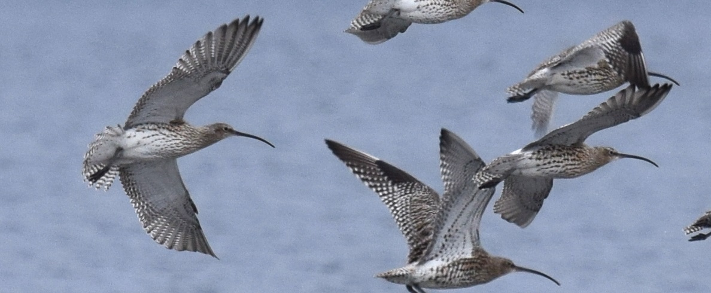
Crédit photo : Arnstein Rønning (Wikimedia Commons)
Reproductibilité des analyses
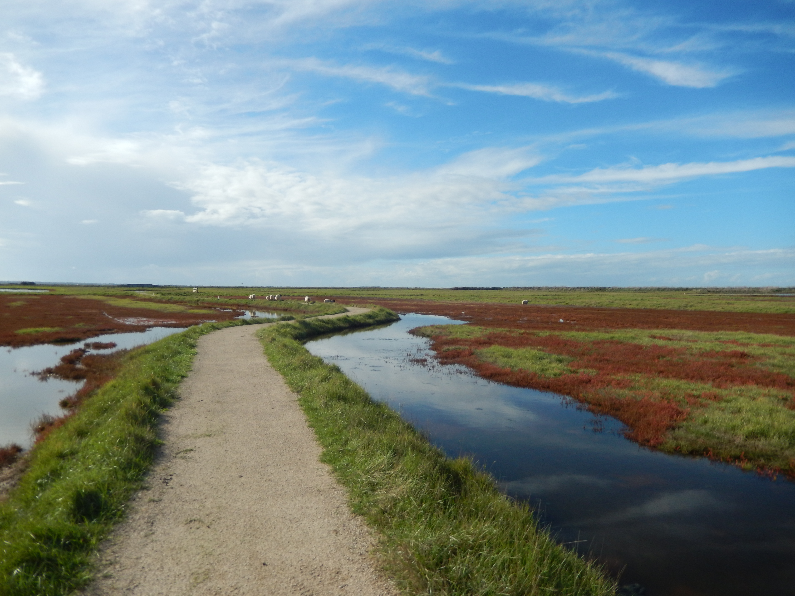
Crédit photo : KiwiNeko14 (Wikimedia Commons)
Toutes les analyses, graphiques et cartes ont été produites à l’aide du logiciel R version XXX et RStudio version XXX.
- Lisez le READme
Voir le READme pour les détails sur les jeux de données et les méthodes.
- Les données analysées
Toutes les données utilisées sont disponibles ici : XX
Cloner le dépôt
git clone [CourlisServeur](https://github.com/SuzanneBonamour/CourlisServeur.git)Installer les dépendances
Ouvrez R et exécutez :
- Lancer les scripts
Tous les scripts pour le nettoyage des données GPS, les analyses spatiales et les cartographies sont disponibles sur le github repository XX. Afin de repoduire les résultats, faire tourner les scripts les uns après les autres par ordre alphabétique “A_Courlis_GPS_x”, puis “B_Courlis_ENV_x”, etc…
Bibliographie
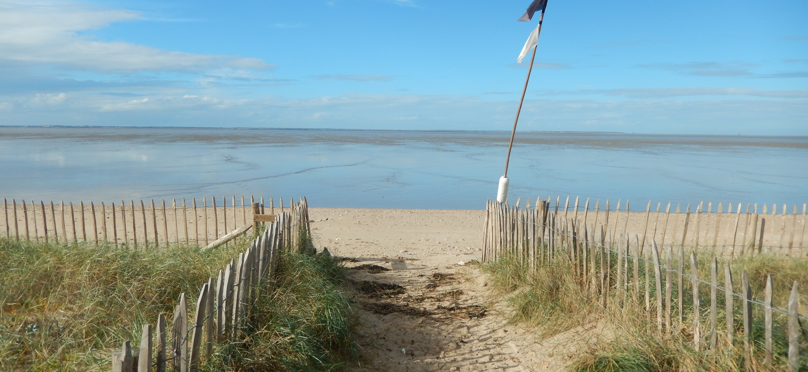
Crédit photo : KiwiNeko14 (Wikimedia Commons)
- Bakker, Wiene, et al. (2021) Connecting foraging and roosting areas reveals how food stocks explain shorebird numbers. Estuarine, Coastal and Shelf Science 259 (2021): 107458.
- Calenge, C., (2006) The package “adehabitat” for the R software: a tool for the analysis of space and habitat use by animals. Ecol. Model. 197 (3), 516–519.
Travail de terrain
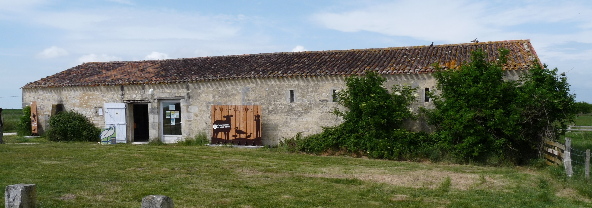
Crédit photo : Ji-Elle (Wikimedia Commons)
Pierre Rousseau, Loic Jomat, Romain Beaubert et Adrien Chaigne ont bagué et équipé de GPS les Courlis cendrés afin d’obtenir les données nécessaires à ces analyses.
Financements
Remerciements
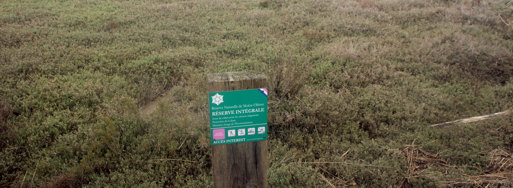
Crédit photo : Pmau (Wikimedia Commons)
Je remercie Anaïs, Marine, Gwenaël et les membres des réunions “cambouis” pour leurs conseils pertinents.
Contact

Crédit photo : Mutichou (Wikimedia Commons)
Analyses et rédaction de l’atlas par Suzanne Bonamour, chargée de traitement de données, LPO France.
Pour toute question, contactez-moi à : suzanne.bonamour@lpo.fr.